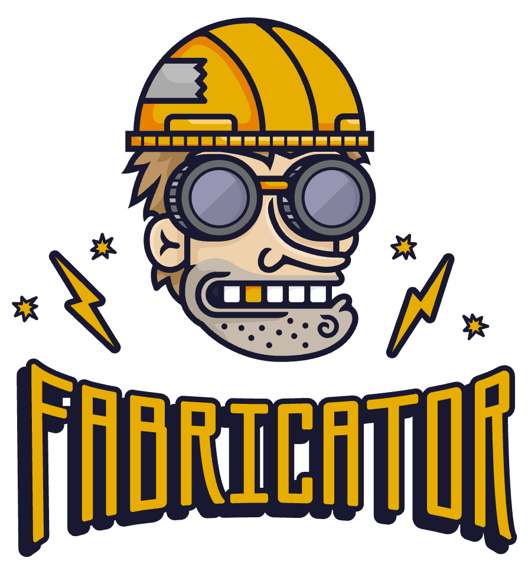
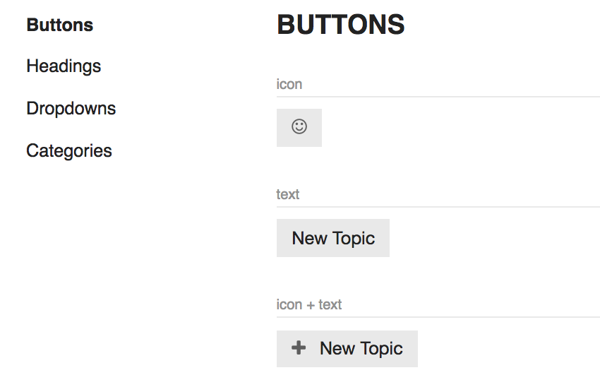
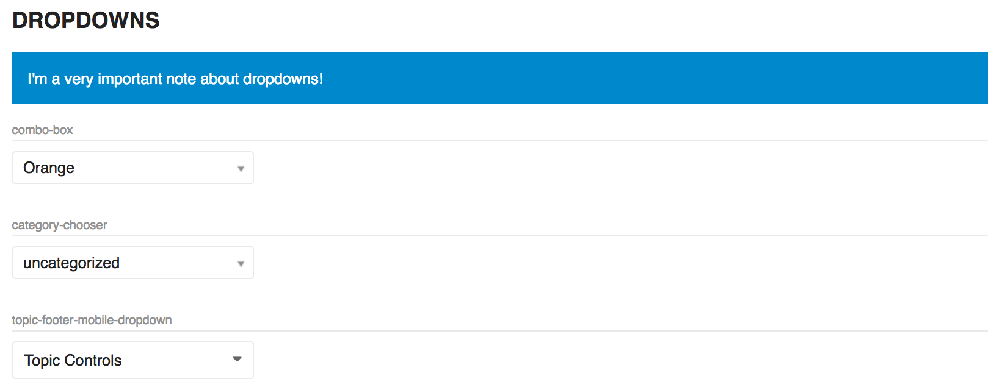
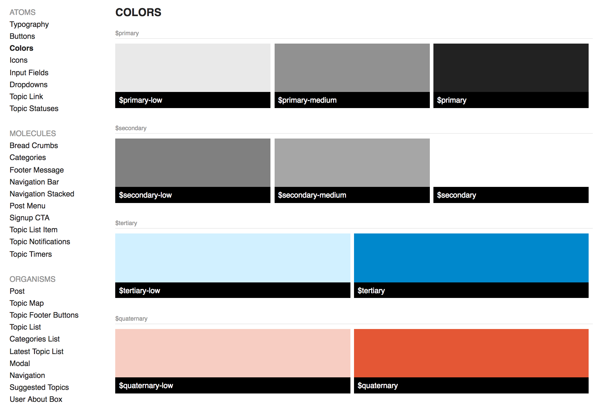
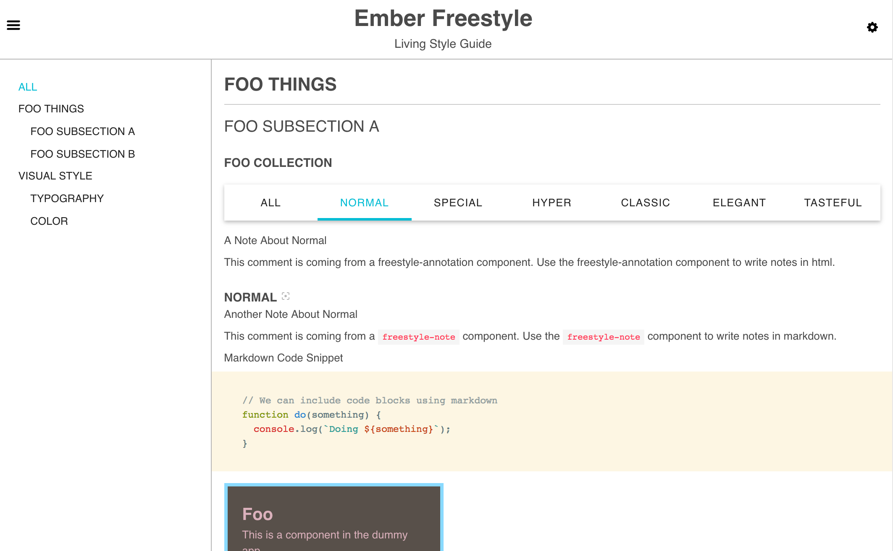

class: center, middle # "We'll Do it Live" ## Integrating a Living Styleguide in your Application ## @eviltrout ## https://eviltrout.com --- ## Discourse: The Software <div class='right-images'> </div> * Modern Forum Software * Full Open Source * Main repo has 22k Stars on Github * Under active development and frequently updated * Hundreds of related projects/plugins/components --- ## Discourse: The Company <div class='right-images'> </div> * Business Model: If you don't want to host the free software yourself, pay us and we'll do it for you. * Co-Founded in 2012 * 100% Remote Work * 18 full time employees from 10 countries in 5 continents * Profitable! --- <div class='right-images' style="margin-top: 1.5em"> <img src="./images/ember.png"> </div> ## Discourse: The Tech Stack * Back end is Ruby on Rails, Redis, Postgres * Front end is Ember.js (Babel ES) * Been running Ember.js before it was 1.0! * We ship Docker Containers for production --- class: center, middle ## I think we've done a few things right! --- class: center, middle ## What have we done **poorly**? --- class: center, middle <div class='right-images'> </div> ## Me: "Discourse is pretty mature, it has everything you need!" --- class: center, middle <div class='right-images'> </div> ## Potential Customer: "Do you have a styleguide?" --- class: center, middle <div class='right-images'> <img src="./images/dotdotdot.png"> </div> ## Me: "..." --- ## Excuses! * We didn't know what we were building when we started * The design and components were changed a lot in the first two years * Initially, Discourse could not be styled without forking it! --- ## Growing Up * We simplified our HTML/CSS a lot to make styling easier * We beefed up the customization tools and added support for plugins. * We moved more of our application to use Ember Components to encourage re-use and composition --- class: center, middle # The Next Step: A Living Styleguide --- <div class='right-images'>  </div> ## Fabricator * A customer of ours had experience with Fabricator * It seemed like a cool tool, but had some downsides * Minor: Node based toolchain that wouldn't fit easily into our development environment * Major: Getting our HTML/CSS into Fabricator was very difficult --- <div class='right-images'> </div> ## Fabricator (continued) * The workflow involved copying and pasting HTML into Fabricator, styling it, then exporting styles back to Discourse * It seemed Fabricator and atomic design is much harder to fit into an existing application than starting fresh --- class: center, middle --- class: center, middle ## What if we just integrated a styleguide directly into Discourse? --- ## The "Not Invented Here" Trap 1. Is this necessary, or do I just want to implement it for fun? 2. How much work are we really talking about here? --- ## Is this necessary? * Copying and pasting HTML is tedious * HTML is frequently getting out of sync as we make structural changes * Designers could live with the workflow, but it's going to involve a lot more chatter --- ## How much work? * My gut feeling is no more than 1 day of work to get a plugin working as a styleguide * My gut feeling is frequently wrong --- ## Risks / Reward * What if it was timeboxed? * Spend one day of work on it. If it pans out, it means front end people will spend much less time in the long run * If it takes longer than a day, junk it --- class: center, middle ## Let's do this! --- ## Ember.js <div class='right-images' style="margin-top: 1.5em"> <img src="./images/ember.png"> </div> * Ember doesn't get as much attention these days as React or Vue.js or (insert next big thing) * It brings a *lot* to the table: * A robust, stateful and hierarchical router * Component support with full Javascript lifecycle * Handlebars templates for simple and powerful templates * An opinionated, convention-over-configuration structure --- ## The power of leverage <div class='right-images' style="margin-top: 1.5em"> <img src="./images/ember.png"> </div> * Simplicity is a trap * Ember includes a lot of things because you're probably going to need them * Discourse uses almost every feature Ember provides, which is a great argument for a "big toolbox" framework --- class: indent-code ## Leverage - Convention over Configuration * We don't want to have to add a new route every time someone adds a new example to the styleguide * Let's copy how Ember does it and discover files in our application based on their paths * Ideally, you'd just drop a handlebars template in a folder and the styleguide would find it: ``` styleguide/ atoms/ button.hbs headings.hbs molecules/ post-menu.hbs bread-crumbs.hbs organisms/ post.hbs topic-list.hbs ``` --- ## What's in a path? Given `styleguide/atoms/button.bhs` * We can extract the example's category `atoms` * We can extract the example's name `button` --- # Ember makes it easy * It exposes a list of all your templates `Ember.TEMPLATES` * When displaying the menu, we can enumerate all the templates found and even translate keys (`button`) using I18n support * The menu can link to an example, which is just the template we have defined --- # Example: buttons.hbs ```hbs {{#styleguide-example title="icon"}} {{d-button icon="smile-o"}} {{/styleguide-example}} {{#styleguide-example title="text"}} {{d-button label="topic.create"}} {{/styleguide-example}} {{#styleguide-example title="icon + text"}} {{d-button icon="plus" label="topic.create"}} {{/styleguide-example}} ``` * `styleguide-example` wraps an example for display * `{{d-button}}` is a component from Discourse that we want to render --- # That's pretty much it!  --- # Time spent * It took less than a day to get the discourse plugin working with a few examples and the designers were off to the races * Open sourced it right away as `discourse-styleguide` (https://github.com/discourse/discourse-styleguide) * First release was ~70 SLOC (Ruby + JS) --- # Enhancements * We added many more examples as we styled them. Adding a new example was as simple as adding a new file + a translation key * Other plugins could add examples and they magically worked, because `discourse-styleguide` was just looking for templates in a `styleguide` directory * We added the ability to create dummy data via JS. You can use the dummy data for your components to render various Discourse elements like topics and posts --- # Note support * Designers wanted the ability to leave notes in the guide * Convention over configuration strikes again! * A template in `notes` folder is automatically rendered in the section with the same name  --- # Current Version Screenshot  --- # Conclusion * We now have a living styleguide, integrated into our application * Designers love it when theming Discourse * Plugins love it because they can extend it and create even more elaborate components and styles * It took very little time to build, thanks to Ember! --- class: center, middle # But wait, there's more! --- class: center, middle # ember-freestyle  --- class: indent-code # ember-freestyle * From Luke Melia + Chris LoPresto * Remarkably similar to `discourse-styleguide` ```hbs {{#freestyle-guide title="My Living Style Guide"}} {{#freestyle-section name="UI Elements"}} {{#freestyle-usage "loading-spinner" title="Loading Spinner"}} {{loading-spinner}} {{/freestyle-usage}} {{/freestyle-section}} {{/freestyle-guide}} ``` * Doesn't do autodiscovery of files, you append to one template * Wouldn't have worked for Discourse due to plugin support * You should probably use it if you're not Discourse! --- class: center, middle # Check it out: ## https://github.com/chrislopresto/ember-freestyle --- class: center, middle ## Thanks! ## @eviltrout ## https://eviltrout.com